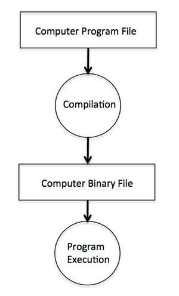
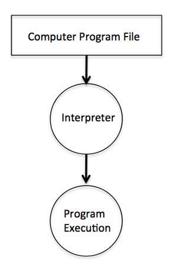

Text Editor
This will be used to type your program. Examples of few editors include Windows Notepad, OS Edit command, Microsoft Visual Studio Code, and vim or vi.
Name and version of text editor can vary on different operating systems. For example, Notepad will be used on Windows and vim or vi can be used on windows as well as Linux, or UNIX.
The files you create with your editor are called source files and for C++ they typically are named with the extension .cpp or .c.
A text editor should be in place to start your C++ programming.
C++ Compiler
This is an actual C++ compiler, which will be used to compile your source code into final executable program.
Most C++ compilers don't care what extension you give to your source code, but if you don't specify otherwise, many will use .cpp by default.
Most frequently used and free available compiler is GNU C/C++ compiler, otherwise you can have compilers either from HP or Solaris if you have the respective Operating Systems.
Extra: Interpreter
Compilers are required in case you are going to write your program in a programming language that needs to be compiled into binary format before its execution.
There are other programming languages such as Python, PHP, and Perl, which do not need any compilation into binary format, rather an interpreter can be used to read such programs line by line and execute them directly without any further conversion.
